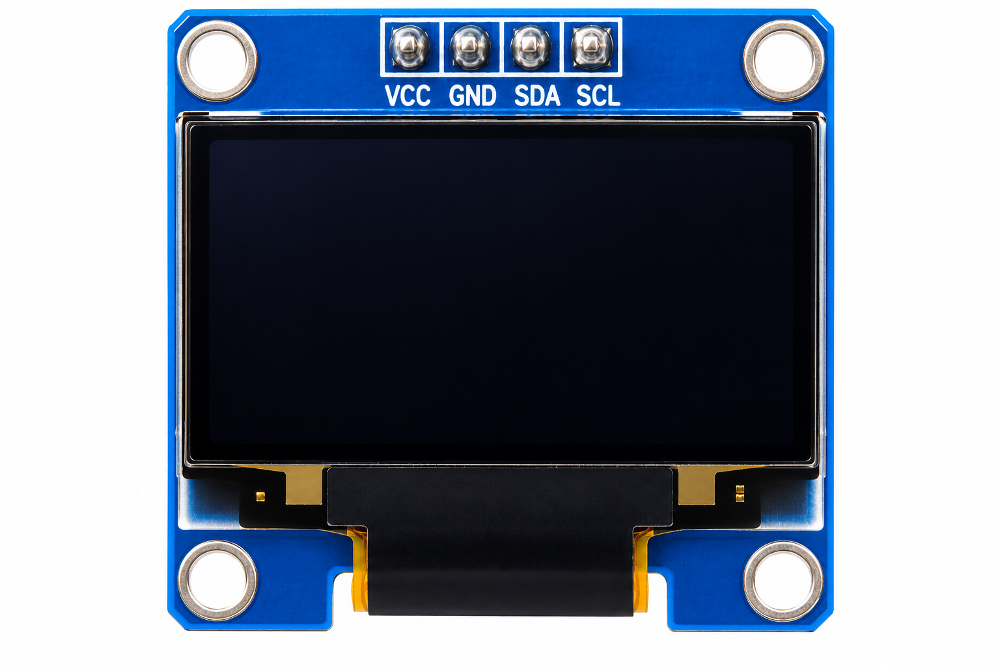

ESP32 Development Board
Quantity: 1
ESP32 Development Board
Quantity: 1

Aim
Monitor relative water level with an analog water sensor, OLED, audible high-level alert and a live Wi-Fi dashboard.
About the Experiment
Monitor relative water level with an analog water sensor, OLED, audible high-level alert and a live Wi-Fi dashboard.
Measurements are relative indicators rather than calibrated physical units. The dashboard works on the same local Wi-Fi network.
Components Required
ESP32 Development Board
Quantity: 1
 Analog Water Level Sensor
Quantity: 1
Analog Water Level Sensor
Quantity: 1

128×64 I2C OLED Display Quantity: 1 Buzzer
Quantity: 1
Buzzer
Quantity: 1
 Jumper Wires
Quantity: As required
Jumper Wires
Quantity: As required
Circuit Connections
| Component / Pin | Connection |
|---|---|
| Water Sensor VCC | 3.3V |
| Water Sensor GND | GND |
| Water Sensor SIG/AO | GPIO 34 |
| OLED VCC / GND | 3.3V / GND |
| OLED SDA / SCL | GPIO 21 / GPIO 22 |
| Buzzer + / - | GPIO 25 / GND |
Circuit Diagram

Working Principle
Sensor Input
→
ESP32 ADC (GPIO 34)
→
Relative Percentage
→
OLED + Buzzer
→
Wi-Fi Dashboard
Procedure
- Connect the analog water sensor to 3.3V, GND and GPIO 34.
- Connect OLED SDA to GPIO 21 and SCL to GPIO 22.
- Connect buzzer positive to GPIO 25 and negative to GND.
- Install ESP32 board support and the U8g2 library in Arduino IDE.
- Set your Wi-Fi name and password in the sketch, upload, and open Serial Monitor at 115200 baud.
- Open the printed IP address on a device using the same Wi-Fi network; test LOW, MEDIUM and HIGH water levels.
Code
Explore the Code
Replace the Wi-Fi placeholders before uploading. The code below is a working implementation of the SOP logic; sensor calibration may be needed for your hardware.
Select a code section to highlight and study it.
Check Your Understanding
Why is GPIO 34 used?
GPIO 34 is an input-only ADC pin suitable for reading the analog sensor voltage.
Why must the phone and ESP32 use the same Wi-Fi?
The ESP32 hosts a local dashboard accessible through its LAN IP address.
How is the output controlled?
The ESP32 compares the relative percentage against the experiment's status thresholds.
Expected Output
The OLED and browser show water percentage and LOW / MEDIUM / HIGH. The buzzer activates at 70% and above.
Result
The experiment demonstrates local sensor monitoring, status classification, output control and browser-based visualization.
What You Learn
Analog input, ADC conversion, I2C OLED, threshold alarms, Wi-Fi and embedded web dashboards.